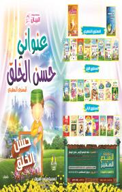
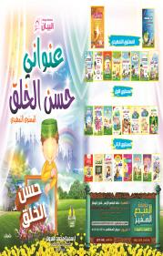

دار النشر هي من تحقق رواج الكاتب بحيث الدار المحترفة تقدم لنا كاتبا لامعا حيث حفلات التوقيع التي تنظمها لأنها تعتبرها من حق الكاتب دون الطلب المسبق منه ولكن لا بأس من دار أخرى توقع العقد مع الكاتب وتتركه هائما في خياله يتمنى خروج ما كتبه للنور ولا بأس من إحساسه عندما يكتشف وبال هذة الدار فكيف نقارن دار محترفة بدار أخرى
مؤسسة المبدع الصغيرتأليف: ا / سميه محمد مبروك- تصنيفات: كتب اطفال
تأليف: محمد علي - تصنيفات: كتب اطفال